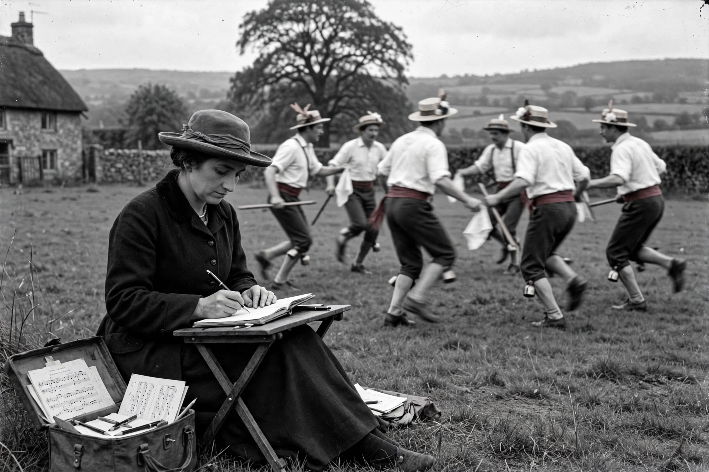

Maud Karpeles OBE (12 November 1885 – 14 October 1976) was a British collector of folk songs and dances, a close collaborator of Cecil Sharp.

| Maud Karpeles | |
|---|---|
| Born | 12 November 1885, London |
| Died | 14 October 1976, London |
| Occupation | Folk song and dance collector |
Karpeles accompanied Sharp collecting songs in the Appalachian Mountains (1916–1918) and helped found the English Folk Dance and Song Society. She edited Sharp's collections after his death.
In 1950 she co-founded the International Folk Music Council. She collected in Newfoundland in 1929–1930 and wrote a biography of Sharp (1933, revised with A. H. Fox Strangways).